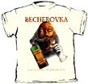

 RELIGION:
RELIGION:
 Stupid Jesus Tricks
The
Celebrity Atheist List
Stupid Jesus Tricks
The
Celebrity Atheist List

The Death Test: when are
you going to die?
Wonder where someone is
buried?: Find-a-Grave: interesting
bios, pictures and maps.
Your Life
Expectancy: "This website provides health-related informational
"tidbits" and an on-line test that will calculate your life expectancy."
6 degrees of Kevin
Bacon
William
Shatner Acting Simulator
* David and Barbara Mikkelson's Urban Legend Reference Pages
* Arthur Goldstuck's Legends from a Small Country
* Dave Wilton's home page, containing English language and etymology
information and links
* Andy Warinner's home page, which debunks and comments on several
interesting urban legends and factoids
* Terry Chan's UL material
 PhoNETic: makes acronyms out of any
phone number! Also PhoneSpell
PhoNETic: makes acronyms out of any
phone number! Also PhoneSpell

Useless Pi Pages:
tons of pi info
Lady Pi
Beauty: a
clever poem about pi, using numbers in many languages
The 69 Page
Favorite
Constants
Largest Known Prime
Numbers
Unclaimed Property Home
Page
www.123greetings.com
Cartoon Bank: "world's largest
stockhouse of single-panel cartoons, including the exclusive archive of
all cartoons previously published in the New Yorker."
perfect present picker
Kill the Teletubbies
I Can Eat Glass Project:
based on the idea that people in a foreign country have an irresistable
urge to try to say something in the indigenous tongue. In most cases,
however, the best a person can do is "Where is the bathroom?" a phrase
that marks them as a tourist. But, if one says "I can eat glass, it
doesn't hurt me," you will be viewed as an insane native, and treated with
dignity and respect." You can find this phrase in a zillion languages
(real and invented) and dialects here.

 Comments? Write me at RMIsaac@eskimo.com
Comments? Write me at RMIsaac@eskimo.com
Approximately hits on all subdirectories since 28 July 1995